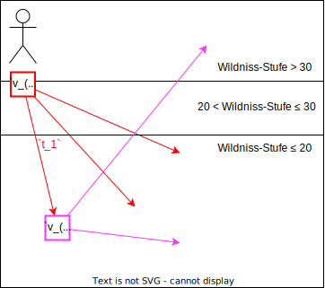
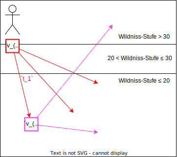

Effiziente kürzeste Wege Algorithmen
zur
Pfadermittlung in der Videospielwelt
von
Old School RuneScape
Oliver Zeidler
Fachhochschule Dortmund
Agenda
- Bewegung in OSRS
- Umsetzung als Graphenproblem
- Suchverfahren
- Performanz-Tests
- Schluss
Bewegung in OSRS
Live Demo
- Karte und Positionen
- Laufen und Gehen
- Teleportationen und die Wildniss
- Transportwege
Karte


Positionen

Gehen
Laufen
Laufen (ungerade)
Teleportieren
Teleportieren in Wildniss
Transportwege
Transportwege
Gehen

Laufen
Wildniss


Zusammenfassung
- Gehschritt: 1 Position pro Zyklus
- Laufschritt: 2 Positionen pro Zyklus
- 179 Teleportationen
- Feste Zielposition
- Außerhalb Wildniss überall einsetzbar
- 27 bis Wildniss-Stufe 30
152 bis Wildniss-Stufe 20 - 4.946 Transportwege: Punkt-zu-Punkt Verbindungen
Pfade

Anforderungen Pfadermittlung
- Ausschluss bestimmter Telep./Transp.
- Effiziente Pfadermittlung (<100ms)
- Keine überschüssige Diagonalschritte
- Pfade sind optimal
- Teleportationen in Wildniss
- Lauf- und Gehschritte
Umsetzung als Graphenproblem
Modellierung

Kostenfunktion

$\lceil \frac{1}{2} + \frac{1}{2} + \frac{1}{2} \rceil + 3 + \lceil \frac{1}{2} + \frac{1}{2} + \frac{1}{2} \rceil = 7$
$(1 + 1) + 3 + (1 + 1) = 7$
Teleportationsursprünge
 

Suchverfahren
Suchverfahren
| Algorithmus | Datenstruktur | Kantentyp |
|---|---|---|
| Dijkstra Dijkstra-Backwards |
PriorityQueue BucketQueue ArrayQueue |
gewichtet |
| BFS BFS-Backwards BFS-MeetInMiddle BFS-MeetAtTeleport |
UnweightedQueue | ungewichtet |
Dijkstra


Dijkstra-Backwards


PriorityQueue
BucketQueue

ArrayQueue

Ungewichteter Graph
BFS
Ungewichtetes Analog zu Dijkstra
BFS-Backwards
Ungewichtetes Analog zu Dijkstra-Backwards
BFS-MeetInMiddle
Abgesuchte Fläche

BFS-MeetInMiddle
Funktionsweise


BFS-MeetInMiddle
Warum ungewichtet?

BFS-MeetInMiddle
Vergleich Dijkstra-Backwards
BFS-MeetAtTeleport
Effiziente Vorwärts-/Rückwärtssuchen


BFS-MeetAtTeleport
Funktionsweise

UnweightedQueue
Besonderheit der Kostenfunktion
Neue Kante erhöht Pfadkosten um 0,5 oder 1
UnweightedQueue

Performanz-Tests
Testverfahren
Ziel: < 100ms in allen Tests

Durchschnitts-Berechenzeiten
Ausgewählte Testfälle
Testfall-Berechenzeiten
Schluss
Zusammenfassung
- Modellierung der Spieltwelt
- Laufen und Gehen
- Teleportationen und Wildniss
- Entwicklung mehrerer Suchverfahren
- Vorwärts, rückwärts, kombiniert
- Gewichtet, ungewichtet
- Analyse Pfadstrukturen und Effizienz
- Performanz-Tests
- Durchschnitt
- Ausgewählte Testfälle
- BFS-MeetAtTeleport üëë
Ausblick
Fertigstellung des OSRS Navigators
implementieren